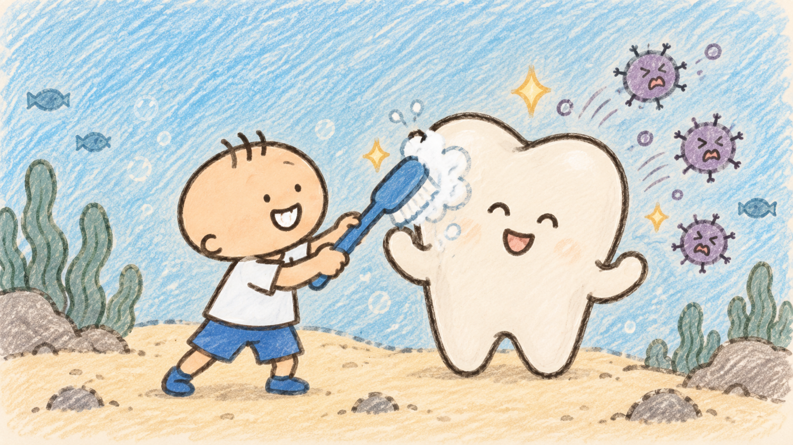
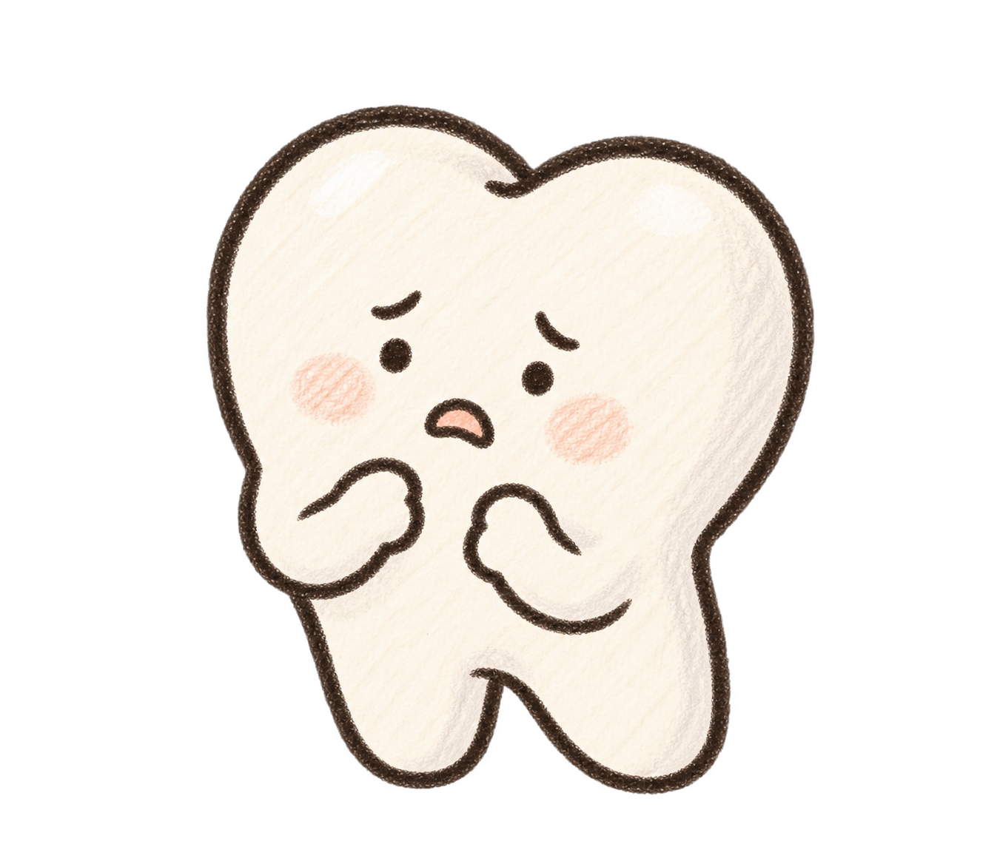
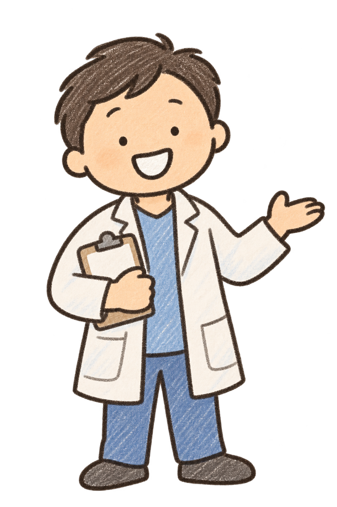
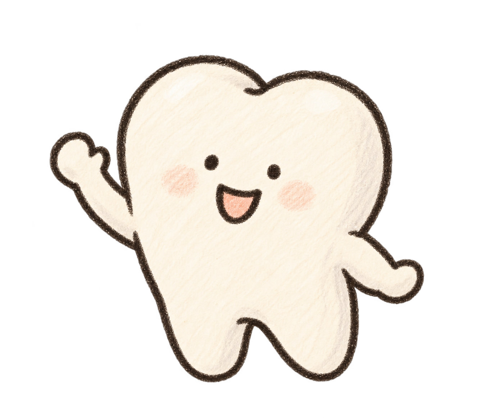
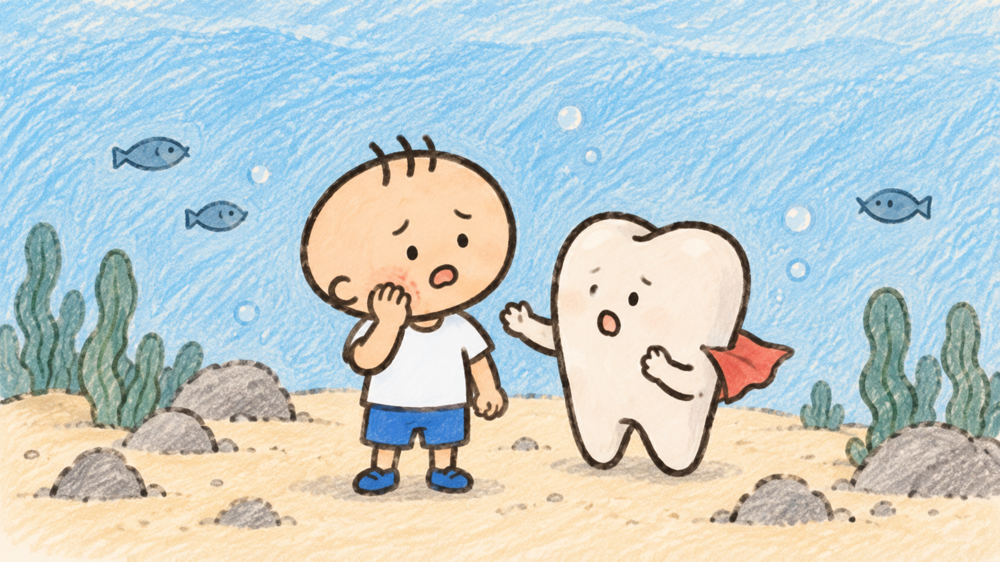

案件 01：牙齒上的黑點
你覺得牙寶的牙齒發生什麼事了？
如果牙齒長時間沒有好好清潔，加上常吃含糖食物，就可能增加蛀牙的機會。牙醫可以幫忙檢查牙齒有沒有蛀牙。
第一段｜安心看牙大冒險
今天牙寶要去看牙醫，可是他好像有一點緊張。你願意成為他的「安心夥伴」，陪他一起認識牙醫嗎？

第一段｜故事情境


韋登牙醫陪你慢慢了解第一段｜認識牙醫
點點看四個項目，了解牙醫如何幫助我們的牙齒。
第一段｜牙齒偵探時間
三張牙齒問題卡都點點看，再回答牙寶的問題。
已查看 0 / 3 張牙齒問題卡
牙醫可以幫忙檢查牙齒與牙齦，提早注意需要處理的地方。
第一段｜學習回顧
進入第二段以前，先記住三件重要的事。

接下來會更深入體驗看牙流程、牙齒守護知識與生活情境。遊戲會在兩段內容全部完成後解鎖。
第二段｜第一幕・故事開始
第二段｜第二幕・候診室
牙寶腦中有好多問題。三張擔心卡都點點看，聽聽韋登牙醫怎麼說。
已了解 0 / 3 個疑問
選一張牙寶的擔心卡，我們一起找答案。
第二段｜第三幕・大型探索
找出六個互動物件。每個物件都有自己的用途，全部探索才能繼續。
診間探索：0 / 6
第二段｜第四幕・流程挑戰
把五張卡排成正確順序。可以拖曳卡片，也可以用卡片旁的上下按鈕。
想一想：從走進診所，到完成檢查，依序會發生什麼？
第二段｜第五幕・牙齒守護中心
依序解鎖四面守護盾，看看牙醫能怎麼幫助牙齒。
牙寶已經知道：看牙醫不只是處理牙痛，也是在平常保護牙齒。
第二段｜第六幕・三個案件
觀察線索、選出最適合的答案，完成三個牙齒案件。

你覺得牙寶的牙齒發生什麼事了？
牙齒上的牙菌斑如果長時間累積，可能慢慢形成比較硬的牙結石。
哪一個方法比較適合？

牙齒周圍如果沒有清潔乾淨，牙齦有時可能紅腫或容易流血。
如果刷牙常常看到牙齦出血，最好的做法是？
三個案件都破解了，接著看看生活中遇到這些情況時可以怎麼做。
第二段｜第七幕・故事選擇
完成四個生活情境。這不是考試，而是練習找到可以幫助自己的做法。
明天要看牙醫，你有點緊張。你會怎麼做？
「原來看牙醫不是只能乖乖什麼都不說，我也可以把自己的感覺告訴牙醫！」
第二段｜第八幕・安心回顧
每一種感覺都可以。選出最接近你現在心情的表情。
全部完成｜遊戲解鎖
牙寶已經不再只是面對未知，而是知道流程、工具、牙齒知識，也知道可以說出自己的感覺。